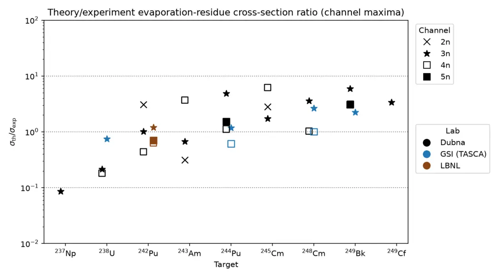

Researcher in Nuclear Physics and Data-Intensive Computing
Projects
Overview
This page collects research software and computational projects arising from my physics research. For the underlying physics, see Research. For broader data science, machine learning and engineering projects, see Data Science, ML and Engineering.
Objective: validate and publish KEWPIE3, the refinement of the KEWPIE2 cascade code (which describes the survival of the excited nucleus) with an implemented and calibrated formation step, for fusion-evaporation cross-section predictions in superheavy element synthesis.
Key question: how can the calculation of the compound nucleus formation probability be improved with Langevin-based stochastic approaches?
About the calculations: KEWPIE3 computes the evaporation-residue cross section as a sum over partial waves of capture, compound-nucleus formation and survival probabilities. The survival stage follows the KEWPIE2 cascade code (H. Lü et al., Comput. Phys. Commun. 200, 381 (2016)); the formation step is the addition in KEWPIE3. The formation stage uses a Langevin-based description with two free parameters, s0 and beta_ss. These were fitted to measured cross sections for nine 48Ca-induced hot-fusion reactions (compound nuclei 285Nh to 297Og; Dubna, GSI and LBNL data) by Gaussian-process Bayesian optimisation of an uncertainty-weighted logarithmic objective, after the nuclear-model configuration was chosen from a 96-configuration factorial study. The fit gives s0 = 6.65 fm and beta_ss = 1.16 × 1021 s−1.
The shaded bands show how the cross section responds when s0 and beta_ss vary together along their strongly anti-correlated compensation direction. They are not a full uncertainty estimate: sensitivity to the calibration data and to the nuclear-structure inputs was studied separately and is not included. The predictions apply the same parameters, without refitting, to reactions with 50Ti, 51V and 54Cr beams, so they extrapolate to different projectiles, and the bands do not include that additional uncertainty.
KEWPIE3 calculation (curves, 2n to 5n channels) for 48Ca-induced reactions on targets from 237Np to 249Cf, compared with measured excitation functions from Dubna, GSI and LBNL (points with error bars). Shaded bands show the response to correlated variation of s0 and beta_ss, not a full uncertainty; arrows mark the mean Coulomb barrier. The calculation reproduces the broad magnitude and energy dependence of most excitation functions, with agreement that varies by reaction and channel. Select the figure to enlarge.

Ratio of calculated to measured cross section at each measured channel maximum, by target (marker shape: channel; colour: laboratory). The median ratio is 1.19 and 29 of 30 entries are within one order of magnitude. Agreement is not uniform: ratios lie below unity for the Np and U targets and above unity for most Cm, Bk and Cf targets, and part of the spread reflects differences between laboratories. These are descriptive statistics, not an independent validation.
Predictions
Cross sections calculated with the same calibrated parameters, without refitting, for reactions that have not been measured.
Predicted cross sections for four reactions not yet measured: 248Cm(51V,xn) and 243Am(54Cr,xn) towards Z = 119, and 248Cm(54Cr,xn) and 249Cf(50Ti,xn) towards Z = 120, calculated with the calibrated parameters and no refitting. Curves show the 2n to 5n channels; the labelled value in each panel is the largest predicted channel maximum (femtobarns). Cross sections of this size, of the order of a femtobarn, are an experimental challenge. Select the figure to enlarge.
Manuscript in preparation
Fusion dynamics
Objective: revisit the fusion dynamics in the fusion-by-diffusion model for fusion-evaporation production cross sections.
The evaporation-residue cross section is a sum over partial waves of three probabilities: crossing the Coulomb barrier, forming a compound nucleus and surviving fission. The formation probability is the least certain factor.
s¨+βs˙−ω2(s−ssad)=r(t),⟨r(t)r(t′)⟩=μ2βTδ(t−t′)
The surface separation s of the two nuclei is a stochastic variable: it moves over an inverted-parabola barrier (curvature ω) under friction β and a random thermal force at temperature T.
The solution of the full equation. The damping ratio x runs from large (overdamped) to small (underdamped). B is the inner barrier height, the second term accounts for the residual kinetic energy, and T′ is an effective temperature.
PCN=21erfcTB(sinj)(sinj≥ssad)
The overdamped limit used in fusion-by-diffusion: the residual kinetic energy is fully dissipated, so only thermal fluctuations carry the system over the barrier.

![Four panels of predicted evaporation-residue cross sections in femtobarns, on a logarithmic axis from 0.01 to 1000, against centre-of-mass energy, with curves for the 2n, 3n, 4n and 5n channels and an arrow marking the mean barrier B0. Top left: curium-248 plus vanadium-51 forming element 119, with a 4n peak of 1.6 fb. Top right: americium-243 plus chromium-54 forming element 119, with a 3n peak of 2.1 fb. Bottom left: curium-248 plus chromium-54 forming element 120, with a 4n peak of 0.2 fb. Bottom right: californium-249 plus titanium-50 forming element 120, with a 3n peak of 2.2 fb.](assets/figures/kewpie3-predictions-four-full.webp)